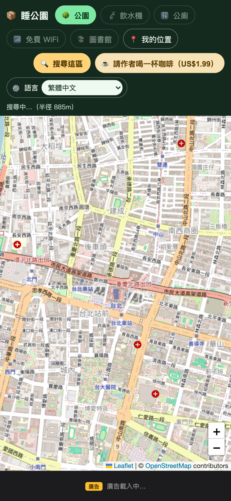
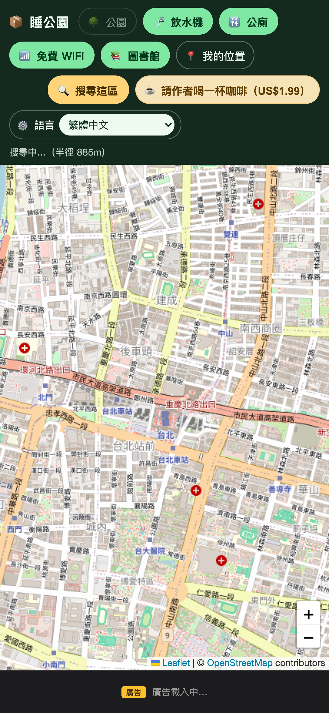
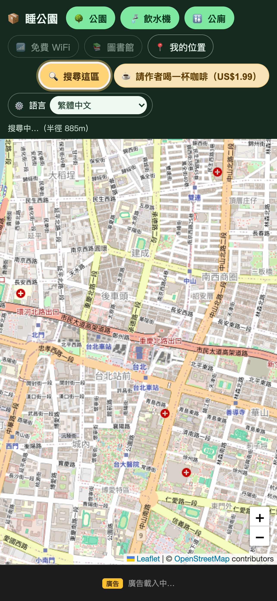

Step 01 / 定位
允許使用目前位置
首次開啟時，系統會詢問位置權限。允許後，藍色圓點會標出你的所在位置。
「睡公園」是一張全球可用的免費生存地圖。它會利用你的目前位置，找出附近的公園、飲水機、公廁、免費 Wi-Fi 與圖書館。

不需要註冊帳號，也不用先建立個人資料。開啟 App、允許定位、選好想找的設施，就能開始。
首次開啟時，系統會詢問位置權限。允許後，藍色圓點會標出你的所在位置。
點選上方圓角標籤。亮綠色代表已選取；可同時搜尋多種設施。
App 會依目前地圖範圍搜尋，並以圖示標出所有找到的地點。
所有地點資料來自 OpenStreetMap 社群。資料完整度會因城市而異，你也可以拖動地圖探索其他國家。
尋找附近綠地、散步空間與可以喘口氣的地方。
找到標記為可飲用水的公共補水地點。
快速查看附近公共廁所，點擊圖示可看名稱。
搜尋 OpenStreetMap 上標記提供無線網路的地點。
找一個能閱讀、休息，通常也有冷氣的室內空間。


App 會依裝置地區顯示當地代表性股票指數。這只是首頁氣氛資訊，不是投資建議；取得失敗時會自動隱藏，不影響地圖。
預設選擇「自動（跟隨裝置）」。如果想固定使用另一種語言，可在 App 上方設定區的下拉選單調整；選擇會保存在這台裝置。
切換後，按鈕、狀態訊息、地圖彈窗與股市幽默句會立即更新。
睡公園不需要帳號。位置用於把地圖移到你身邊並搜尋附近設施；如果拒絕定位，仍可手動拖動地圖搜尋其他區域。
只有在 App 使用期間取得目前位置。藍色定位點與精度範圍只用於地圖操作。
公園與公共設施來自 OpenStreetMap。缺漏或錯誤可能源自社群資料尚未更新。
底部可能顯示 Google AdMob 橫幅廣告。廣告不會遮住主要搜尋功能。
App 不保證地點開放、安全、免費或適合過夜。請遵守當地法律、管理規則與現場公告。
找不到地點、定位不動或付款中斷時，可以先從這裡排除。
確認至少選了一種設施，稍微放大地圖後再搜尋。部分城市的 OpenStreetMap 公共設施資料較少。
到手機系統設定，確認已允許睡公園在使用 App 期間存取位置。室內定位較不準時，可到戶外再試。
可以。直接拖動地圖到其他國家或城市，再按「搜尋這區」。設施 API 沒有限定台灣。
可能是休市、網路中斷或行情服務暫時不可用。股市列會隱藏，但地圖仍可正常使用。
可以。拖動地圖到想找的區域，再按「搜尋這區」即可；只是無法顯示你的藍色定位點。